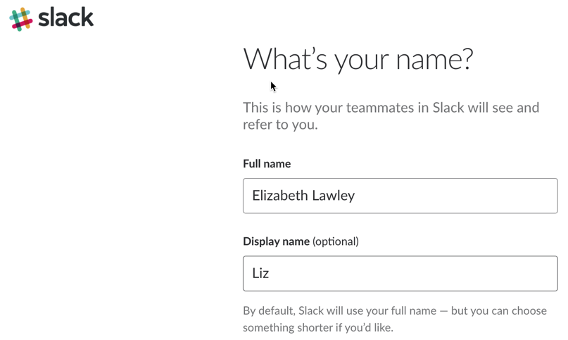

Tools Setup Exercise
(Week 1, Tuesday 8/28)
This exercise is intended to get you set up with the tools we'll be using this semester, and to give us a sense of where you are on prerequisite knowledge.
Part 1: GitHub
All of the content for this class is stored here on GitHub. You can see all of the code for these pages, and see the full revision history for each page, by going to the repository page at https://github.com/LawleyFall2018/230-fall2018.
Because these materials are in a public repository ("repo"), you don't need a Github account to access them. However, next week you'll be learning how to use Git and Github to keep track of files in your own projects, and publish them using the GitHub pages service (which hosts this coures website), so you'll need to make sure you have an account for that.
Github accounts are free, but with a free account you can only have public repos, which means everybody can see all of your files. Since you'll be uploading files related to some of your assignments, and you might not want the world-at-large to see your work in progress, private repos make more sense. Happily, Github offers a free "Student Development Pack" that gives you unlimited private repos.
Here's the page to sign up for a GitHub account if you don't already have one: https://github.com/join . (If you already have an account, you're welcome to use it for this class; you don't need to create a new one.)
I also encourage you to sign up for the Github Student Developer Pack. You can see a list there of all the perks you get--but the most useful one for you right now is that it gives you the ability to create private repositories.
Click on the link to get the pack. You'll need to fill out the form with your RIT email address, RIT's name, and your expected graduation date. For the "How do you plan to use GitHub?" question, you can say that you'll be using it for assignments in your web development course.
Part 2: Slack
I've created a Slack site for our class at http://lawley230fall2018.slack.com/. It's by far the best way for you to ask me (or the TA, or the class) any questions you might have, and for me to quickly get important announcemnts ("Class is canceled today!" "I'm giving you an extra day on the assignment!") out to you.
It's set up so anyone with an @rit.edu address can create an account, just to make things easier during the first few weeks of class; I'll disable that after add/drop is over. (NOTE: Every Slack site uses its own login and password, so even if you already use Slack for another group, you'll need to create a new user ID and password for this one.)
Be sure to include your full name so that we can count your participation towards your grade (you can pick a different "display" name as a nickname to display.
After you've successfully logged into Slack, post your GitHub user name to the #introductions channel..
I highly recommend installing the Slack client on your mobile device (if you have one). You configure it so that you only receive notifications when the TA or I post to the #announcements channel, or you receive a private message. Since I use Slack to get last-minute information to you, there's a real benefit to having the client on your mobile.
Part 3: HTML Editors
As you know, HTML and CSS files are plain text files, and can be created by any text editor. However, editors designed for web development make your life significant easier when you're working with all but the simplest code. I don't care what editor you use, but in class and in exercises, I'll be using Visual Studio Code; that's because it has built-in git functionality that you'll need for your projects and exercises. If you prefer to use another editor, like Brackets, that's fine--but you'll need to make sure that you install any necessary extensions so that it works properly with Git for Thursday's class.
Both VS Code and Brackets have some functionality built in by default, but much of their power comes from their extensibility. The features that are built in to each editor vary, as well. VS Code, for instance, has native support for Git, while Brackets has native support for live web server previewing of pages.
### Visual Studio Code
VS Code is not the same thing as Visual Studio, although it's also made by Microsoft. It's a web-focused editor that's free and cross-platform, and it supports all of the technologies we'll be using in class. Its biggest weakness is its lack of a native live preview function, but you can add that functionality with the [Live Server extension](https://marketplace.visualstudio.com/items?itemName=ritwickdey.LiveServer).
You may find these articles on VS Code useful:
- The Basics of Visual Studio Code
- HTML Programming in VS Code
- Save Time and Keystrokes with Emmet in Visual Studio Code
Brackets
Brackets, developed by Adobe, is also free and cross-platform, and offers much of the same functionality as VS Code. While it has live previewing built in, it does not have Git integration built in--so if you choose to use Brackets, you'll need to install the [Brackets Git extension](https://github.com/brackets-userland/brackets-git#installation). Also, because Brackets is not my primary editor, I may not be able to answer questions about why something is or isn't working in the program.
Part 4: RIT's Web Server
We will be working with two servers this semester--the main RIT people.rit.edu server, and GitHub Pages. You'll learn about GitHub Pages next week, but this week you'll be working with the RIT server.
To demonstrate that you have a working knowledge of HTML, CSS, and FTP, you need to create a basic index.html page, and place it in an igme230 directory in your www directory on people.rit.edu (you'll need to connect to banjo.rit.edu using an FTP client to do that).
If it's done correctly, loading https://people.rit.edu/youruserid/igme230/ should display the file you created. (Remember to replace youruserid with your actual RIT user ID!)
If you are unable to do this, you will not lose points--but we will check it again on Sunday at noon, and you will lose points if it has not been uploaded by then. That gives you some time to review the Week 0 content, and/or attend the boot camp on Saturday afternoon.